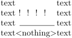
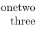

Contents
Summary
The command \filler is used to fill in symbols between text elements.
Settings
Description
Examples
example from the source
-
\definefiller[test-a][alternative=stretch] \definefiller[test-b][alternative=symbol,symbol=!] \definefiller[test-c][alternative=rule,height=.1ex,leftmargin=.5em,rightmargin=.25em] text\filler[test-a]text \par text\filler[test-b]text \par text\filler[test-c]text \par text\checkedfiller{
}text \par gives
- 
example from the mailing list
-
\definefiller[dots] [right=\hskip\zeropoint\strut] \definefiller[radots][left=\dontleavehmode,right=\hskip\zeropoint\strut] one \filler[dots] two\par \filler[radots] three
gives
- 
(Hans Hagen, 2025-09-24; doesn’t work with the wiki’s LMTX installation from 2025-02-19)